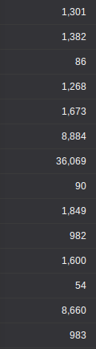
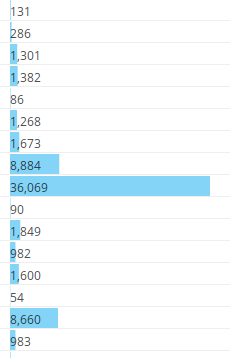
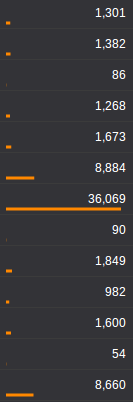
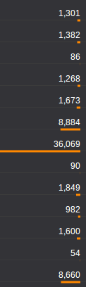

Weya.coffee is a lightweight library with no dependencies to generate DOM elements. We developed it to replace Coffeecup as a client side template engine. Because of its simplicity and performance, we are also using Weya to replace DOM manipulation of d3.js in data visualizations.
Weya.coffee
March 19, 2014
Here's a small example to show the usage.
userElems = []
Weya container, ->
@div ".users", ->
for user, i in users
userDiv = @div '.user', on: {click: editUser}, ->
name = @span ".name", user.name
@span ".phone", user.phone
if v.image?
@img src: user.image
userDiv.userId = i
userElems.push user: user, name: nameThe above code creates a list of users. It binds the data to the dom element userDiv.userId = i and also keeps track of all the DOM elements in userElems. This is important if you want to manipulate the DOM without reloading the entire user list, for example if a name of a user changes you could change it with userElems[changedUserId].name.textContent = changedUserName.
Is it a template engine?
Weya is quite similar to Coffeecup in terms of the syntax. But it's much faster, so it won't fail if you have lots of elements.
Also, Weya lets you register event handlers. I feel this is much cleaner than registering events later with CSS selectors, and it's easier to maintain the code since events are register within the DOM creation code.
Can it replace d3.js?
We use weya to replace most all the d3.js DOM manipulation.
Code with Weya is simpler, shorter and nicely intended. Here's the code that draws bar chart in this example.
Weya svg, ->
for d in data
@g ".g", transform: "translate(#{x0 d.State},0)", ->
for age in d.ages
@rect
width: x1.rangeBand()
x: x1 age.name
y: y age.value
height: height - y age.value
fill: color age.name
for d, i in ageNames.slice().reverse()
@g ".legend", transform: "translate(0,#{i * 20})", ->
@rect x: width - 18, width: 18, height: 18, fill: color d
@text
x: width - 24, y: 9, dy: ".35em"
style: {'text-anchor': "end"}, text: dHere's the code that does the same with d3.js.
var state = svg.selectAll(".state")
.data(data)
.enter().append("g")
.attr("class", "g")
.attr("transform", function(d) { return "translate(" + x0(d.State) + ",0)"; });
state.selectAll("rect")
.data(function(d) { return d.ages; })
.enter().append("rect")
.attr("width", x1.rangeBand())
.attr("x", function(d) { return x1(d.name); })
.attr("y", function(d) { return y(d.value); })
.attr("height", function(d) { return height - y(d.value); })
.style("fill", function(d) { return color(d.name); });
var legend = svg.selectAll(".legend")
.data(ageNames.slice().reverse())
.enter().append("g")
.attr("class", "legend")
.attr("transform", function(d, i) { return "translate(0," + i * 20 + ")"; });
legend.append("rect")
.attr("x", width - 18)
.attr("width", 18)
.attr("height", 18)
.style("fill", color);
legend.append("text")
.attr("x", width - 24)
.attr("y", 9)
.attr("dy", ".35em")
.style("text-anchor", "end")
.text(function(d) { return d; });Another problem we solved with Weya is that d3.js draws all the elements that are represented by the data at once. And with Weya we can draw progressively - this is quite useful when you have a lot of data and you don't won't the interface to go unresponsive until everything is drawn. Here's a small example to show the point.
i = 0
data = ...
draw = ->
return if i is data.length
d = data[i]
Weya container, ->
@div '.user', ->
...
i++
requestAnimationFrame draw
draw()The disadvantage of Weya over d3.js is that it doesn't bind data to DOM elements like d3.js does. So you can't use enter(), exit() and updates when data changes. But most users rarely need these features. We use Weya with our own data bindings with DOM elements (as in the first example with userElems), and we find it simpler than enter() and exit().
Visualize data tables with variable length underlines
December 23, 2013
Underline doesn't take away space in a table or a list of data and by varying the length of the underline you can help readers scan much faster and get an idea of the data and its distribution without having to read each number.
List
The simplest and often the best way to show a list of numbesr is to simply list them.
However, if the reader is to find the largest value she might have to go through each number, especially if all of them have the same number of digits. Sorting by the value will help, but it doesn't work if it's on a table that is sorted by some other figure.
The line height of the list in the above figure can be reduced but a similar height can be found in most software, including spreadsheets and popular BI.
Bars
Adding a bar, like a horizontal bar chart, helps you clearly identify the largest value, as well as get an understanding of the distribution without having to go through the numbers.
But it's taking up a lot of space - at least another column width or more if you want to make it aesthetically pleasing. Another problem is that it might distract someone trying to read through the numbers; of course, choosing a more subtle color will help in that.
Displaying text over bars reduces the space, but it makes it lot harder to read the numbers.
Underline
Decreasing the height of the bar to a few pixels, or even a single pixel can still give the same effect as bars. Also, you can place them underneath the numbers so that it doesn't take up an extra column.
Right aligning the bars takes away the cluttered feeling. Again, choosing a more subtle color and/or reducing the thickness of the lines will help reduce the highlighting effect.
The scale could be linear or logarithmic. A small axis could be place at the column heading to stop readers from misinterpreting.




